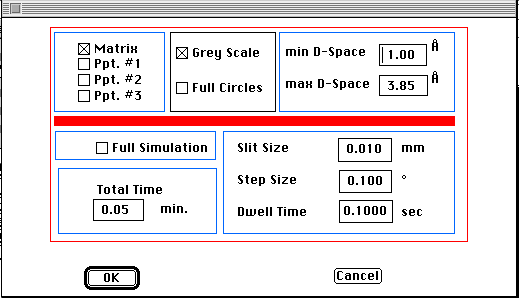

Distributed By: Virtual Labs
Ring & Debye Scherrer Pattern Definition Dialog Box
PATH...File Menu:New:x-ray diffract::Debye-Scherrer...
PATH...{Debye-Scherrer}:Define Menu::Define...

Ring & Debye Scherrer Pattern Dialog Box
Desktop Microscopist supports three techniques which are utilized for ploy-grained
or powdered material. The calculation of intensity is based solely on structure
factor and plane weighting. Desktop Microscopist calculates all the poles
which will be excited at a set distance from the main beam, sums these intensities
and then normalizes all summed intensities to the maximum value.
Two of these techniques, e-ring and Debye-Scherrer generate a diffraction
pattern of a poly-grained material at a set camera length from the specimen.
Use the Setup Ring Pattern Dialog Box to enter the important parameters.
These parameters include:
- Selection of the diffracting crystals.
- Whether the rings will be displayed by crystal color or grey scale.
- Minimum d-space to be plotted.
- Maximum d-space to be plotted.
- Whether to plot full or partial circles.
Author: J.ames T.
Stanley
 Desktop
Manual:Dialog Boxes
Desktop
Manual:Dialog Boxes
Distributed By: Virtual Labs
Last Updated:1/12/96 Sat, Apr 27, 1996